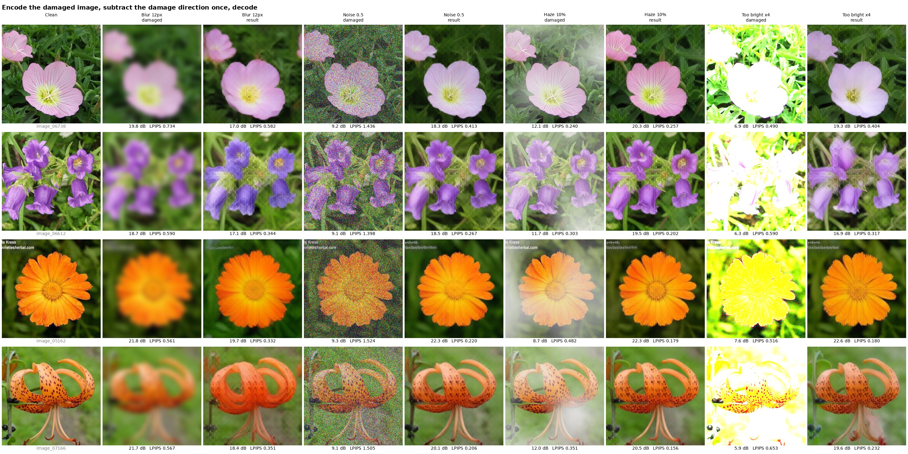

<title>Sphere Encoder Restoration</title>
<meta name="claude:viewport-fit-sides" content="cover">
<link rel="preconnect" href="https://fonts.googleapis.com">
<link rel="preconnect" href="https://fonts.gstatic.com" crossorigin>
<link rel="stylesheet" href="https://fonts.googleapis.com/css2?family=IBM+Plex+Mono:wght@400&family=IBM+Plex+Sans:wght@400;600&display=swap">
<style>
/* layout: one plain white reading column. summary table, then one section per
   damage type: findings, two static charts, table, figure */
:root {
  --bg: #ffffff;
  --fg: #1a1a1a;
  --fg-2: #555555;
  --muted: #8a8a8a;
  --line: #e4e4e4;
  --anchored: #2a78d6;
  --loop: #eb6834;
  --font-body: "IBM Plex Sans", system-ui, -apple-system, "Segoe UI", sans-serif;
  --font-data: "IBM Plex Mono", ui-monospace, Menlo, monospace;
  color-scheme: light;
}
* { box-sizing: border-box; }
body {
  background: var(--bg); color: var(--fg); font: 16px/1.6 var(--font-body);
  padding-left: max(16px, env(safe-area-inset-left, 0px));
  padding-right: max(16px, env(safe-area-inset-right, 0px));
  padding-block: 48px 72px;
}
main { max-width: 960px; margin: 0 auto; display: grid; gap: 56px; }
section { display: grid; gap: 16px; }
h1, h2, h3 { font-weight: 600; line-height: 1.2; margin: 0; text-wrap: balance; }
h1 { font-size: 32px; }
h2 { font-size: 24px; padding-top: 8px; border-top: 1px solid var(--line); }
h3 { font-size: 16px; }
p, ul { margin: 0; max-width: 70ch; }
ul { padding-left: 20px; display: grid; gap: 6px; }
a { color: var(--anchored); }
.sub { color: var(--fg-2); }
.small { color: var(--muted); font-size: 14px; }
.table-wrap { overflow-x: auto; }
table { border-collapse: collapse; width: 100%; font-size: 14px; }
th, td { text-align: left; padding: 8px 12px 8px 0; border-bottom: 1px solid var(--line); vertical-align: top; }
th { font-weight: 600; color: var(--fg-2); white-space: nowrap; }
td.num { font-family: var(--font-data); font-variant-numeric: tabular-nums; white-space: nowrap; }
td.best { font-weight: 600; }
.charts { display: grid; grid-template-columns: repeat(auto-fit, minmax(300px, 1fr)); gap: 24px; }
.chart { min-width: 0; display: grid; gap: 4px; }
.chart svg { display: block; width: 100%; height: auto; }
.legend { display: flex; flex-wrap: wrap; gap: 4px 16px; font-size: 13px; color: var(--fg-2); }
.legend span { display: inline-flex; align-items: center; gap: 6px; }
.legend svg { width: 22px; height: 10px; }
figure { margin: 0; display: grid; gap: 8px; }
figure img { display: block; width: 100%; max-width: 100%; height: auto; border: 1px solid var(--line); }
figcaption { color: var(--fg-2); font-size: 14px; }
.tabs { display: flex; flex-wrap: wrap; gap: 24px; border-bottom: 1px solid var(--line); }
.tabs a { color: var(--fg-2); text-decoration: none; font-weight: 600; padding: 8px 0; margin-bottom: -1px; border-bottom: 2px solid transparent; }
.tabs a[aria-current="page"] { color: var(--fg); border-bottom-color: var(--fg); }
.tabs a:focus-visible { outline: 2px solid var(--anchored); outline-offset: 2px; }
.view { display: grid; gap: 56px; }
.steps { font-family: var(--font-data); font-size: 14px; color: var(--fg-2); }
ol { margin: 0; padding-left: 22px; display: grid; gap: 6px; max-width: 70ch; }
</style>

<main>
  <header style="display:grid;gap:12px">
    <h1>Restoring images with a Sphere Encoder</h1>
    <p class="sub">CMSC673. Checkpoint sphere2-large-flowers-512px, Flowers-102 images.</p>
    <p>Can a pretrained Sphere Encoder repair a damaged photo? We test four kinds of damage (blur, noise, haze, overexposure) and two approaches: a restoration loop that encodes and decodes the image a few times, and a one-step fix that edits the latent directly.</p>
    <p>Every result is compared with the clean original using <strong>PSNR</strong> (pixel accuracy in dB, higher is better) and <strong>LPIPS</strong> (perceptual difference, lower is better).</p>
  </header>

  <nav class="tabs" aria-label="Approach">
    <a href="#loop" id="tab-loop">Restoration loop</a>
    <a href="#latent-fix" id="tab-latent-fix">One-step latent fix</a>
  </nav>

  <div class="view" id="view-loop">
  <section>
    <h2>How it works</h2>
    <p>One pass takes the current image, encodes it, rotates the latent 10° toward random noise and decodes it. We start from the damaged image and repeat for a few passes.</p>
    <p>On its own, this loop only knows what flowers look like in general. Each pass pulls the image toward a typical flower and loses a little of the original. The <strong>anchor</strong> fixes this. After each decode it finds the image closest to the decoder's output that, damaged the same way, matches the damaged input. The model can fill in what the damage erased, but it cannot change what the input still shows. The <strong>data weight</strong> sets how strictly the input is trusted.</p>
    <p>For haze and overexposure we also show <strong>undo, no model</strong>, which reverses the known damage with a formula and uses no model at all.</p>
  </section>

  <section>
    <h2>Summary</h2>
    <div class="table-wrap"><table id="overview"></table></div>
    <p class="small">Ideal passes: the pass with the lowest LPIPS for the recommended setting, over all strengths tested. Best result: at the heaviest strength, 32 validation images.</p>
  </section>

  <div id="tasks" style="display:grid;gap:56px"></div>

  <p class="small">Charts and tables use 32 Flowers-102 validation images per strength. Each figure shows the first 10 validation images (one per flower class) at the heaviest strength, with their own averages. Code is in <code>inverse/</code> on the <code>dev-apoorva</code> branch.</p>
  </div>

  <div class="view" id="view-latent-fix" hidden>
  <section>
    <h2>One-step latent fix</h2>
    <p class="steps">damaged image → encode → subtract the damage direction → decode</p>
    <p>Each kind of damage moves an image's latent in a partly shared direction. For 32 validation images, one image's shift lines up with the average shift of the others by about 0.24 to 0.37 for blur, noise and haze (0 would mean unrelated directions). So we subtract that shared direction once and decode. There is no added noise, no anchor and no second pass.</p>
  </section>

  <section>
    <h2>How the damage direction is found</h2>
    <p>One direction is computed for each damage type and strength, with no training:</p>
    <ol>
      <li>Take 64 clean training images and damage each one the same way.</li>
      <li>Encode both versions. A latent is 16 × 16 tokens of 384 numbers. Scale each latent to length 1, the way the model places latents on its sphere.</li>
      <li>For each image, the shift is the damaged latent minus the clean latent.</li>
      <li>The damage direction is the average of the 64 shifts: one fixed array the size of a latent. What is specific to each image mostly cancels out, and what the damage does to every image remains.</li>
    </ol>
    <p>To fix an image, subtract α times the direction (scaled to the latent's length) and decode. α was chosen among 0 to 4 on 32 other training images: 1 for blur, 1.5 for the rest.</p>
  </section>

  <section>
    <h2>Results</h2>
    <div class="table-wrap"><table id="direct-table"></table></div>
    <p class="small">32 validation images at the heaviest strength. Bold: the best of the last three columns, by LPIPS. The restoration loop column uses its recommended setting from the other tab.</p>
    <ul>
      <li><strong>Too bright and noise:</strong> the one-step fix is the best method we have, on both metrics. Blown-out flowers get their color back, which no version of the loop managed.</li>
      <li><strong>Haze:</strong> the haze is visibly removed and LPIPS is the best of all methods, but PSNR is far below the anchored loop, because brightness and colors do not match the original exactly.</li>
      <li><strong>Blur:</strong> the result looks sharp but is not the right image. PSNR falls below the blurred input and colors shift. The anchored loop is clearly better here.</li>
      <li><strong>The subtraction always helps</strong> compared with encoding and decoding the damaged image unchanged.</li>
    </ul>
  </section>

  <section>
    <h2>Example images</h2>
    <figure>
      
      <figcaption>For each damage type at its heaviest strength, the damaged input and the one-step result. Each tile shows its own PSNR and LPIPS. <a href="figures/direct_fix.jpg" target="_blank" rel="noopener">Open the full-size image</a>.</figcaption>
    </figure>
    <p class="small">Limitation: the direction depends on the damage type and its strength, so both must be known. A clean version of the image being fixed is not needed.</p>
  </section>
  </div>
</main>

<script id="results" type="application/json">[{"id":"deblur","name":"Blur","what":"Gaussian blur std","unit":"px","figure":"figures/deblur_12.jpg","figure_level":12,"figure_passes":[1,3,5],"mu":1000,"levels":[{"level":2.0,"degraded":{"step":null,"psnr":28.6,"ssim":0.843,"lpips":0.249},"n":32,"curves":{"0":[{"step":1,"psnr":20.52,"ssim":0.559,"lpips":0.216},{"step":2,"psnr":19.46,"ssim":0.554,"lpips":0.262},{"step":3,"psnr":18.16,"ssim":0.536,"lpips":0.309},{"step":4,"psnr":17.09,"ssim":0.517,"lpips":0.352},{"step":5,"psnr":16.24,"ssim":0.5,"lpips":0.388},{"step":6,"psnr":15.62,"ssim":0.486,"lpips":0.42}],"1000":[{"step":1,"psnr":34.69,"ssim":0.928,"lpips":0.046},{"step":2,"psnr":34.77,"ssim":0.928,"lpips":0.045},{"step":3,"psnr":34.77,"ssim":0.928,"lpips":0.044},{"step":4,"psnr":34.77,"ssim":0.928,"lpips":0.044},{"step":5,"psnr":34.77,"ssim":0.928,"lpips":0.044},{"step":6,"psnr":34.77,"ssim":0.928,"lpips":0.044}],"25":[{"step":1,"psnr":30.56,"ssim":0.854,"lpips":0.096},{"step":2,"psnr":30.62,"ssim":0.855,"lpips":0.096},{"step":3,"psnr":30.62,"ssim":0.855,"lpips":0.096},{"step":4,"psnr":30.63,"ssim":0.855,"lpips":0.096},{"step":5,"psnr":30.62,"ssim":0.855,"lpips":0.096},{"step":6,"psnr":30.62,"ssim":0.855,"lpips":0.096}]}},{"level":4.0,"degraded":{"step":null,"psnr":24.39,"ssim":0.704,"lpips":0.435},"n":32,"curves":{"0":[{"step":1,"psnr":19.47,"ssim":0.555,"lpips":0.285},{"step":2,"psnr":18.57,"ssim":0.544,"lpips":0.314},{"step":3,"psnr":17.47,"ssim":0.527,"lpips":0.353},{"step":4,"psnr":16.59,"ssim":0.51,"lpips":0.39},{"step":5,"psnr":15.87,"ssim":0.494,"lpips":0.42},{"step":6,"psnr":15.27,"ssim":0.481,"lpips":0.447}],"1000":[{"step":1,"psnr":28.33,"ssim":0.788,"lpips":0.168},{"step":2,"psnr":28.01,"ssim":0.772,"lpips":0.145},{"step":3,"psnr":27.99,"ssim":0.771,"lpips":0.144},{"step":4,"psnr":27.98,"ssim":0.771,"lpips":0.144},{"step":5,"psnr":27.97,"ssim":0.771,"lpips":0.144},{"step":6,"psnr":27.97,"ssim":0.771,"lpips":0.144}],"25":[{"step":1,"psnr":25.85,"ssim":0.709,"lpips":0.223},{"step":2,"psnr":25.71,"ssim":0.7,"lpips":0.206},{"step":3,"psnr":25.67,"ssim":0.699,"lpips":0.205},{"step":4,"psnr":25.67,"ssim":0.698,"lpips":0.206},{"step":5,"psnr":25.65,"ssim":0.697,"lpips":0.207},{"step":6,"psnr":25.64,"ssim":0.697,"lpips":0.207}]}},{"level":6.0,"degraded":{"step":null,"psnr":22.5,"ssim":0.642,"lpips":0.526},"n":32,"curves":{"0":[{"step":1,"psnr":17.93,"ssim":0.533,"lpips":0.412},{"step":2,"psnr":17.0,"ssim":0.52,"lpips":0.417},{"step":3,"psnr":16.16,"ssim":0.504,"lpips":0.44},{"step":4,"psnr":15.44,"ssim":0.489,"lpips":0.464},{"step":5,"psnr":14.9,"ssim":0.476,"lpips":0.486},{"step":6,"psnr":14.4,"ssim":0.464,"lpips":0.506}],"1000":[{"step":1,"psnr":25.71,"ssim":0.703,"lpips":0.299},{"step":2,"psnr":25.37,"ssim":0.682,"lpips":0.23},{"step":3,"psnr":25.3,"ssim":0.68,"lpips":0.223},{"step":4,"psnr":25.29,"ssim":0.679,"lpips":0.221},{"step":5,"psnr":25.28,"ssim":0.679,"lpips":0.221},{"step":6,"psnr":25.27,"ssim":0.678,"lpips":0.221}],"25":[{"step":1,"psnr":23.81,"ssim":0.645,"lpips":0.346},{"step":2,"psnr":23.75,"ssim":0.637,"lpips":0.294},{"step":3,"psnr":23.71,"ssim":0.635,"lpips":0.284},{"step":4,"psnr":23.68,"ssim":0.634,"lpips":0.281},{"step":5,"psnr":23.65,"ssim":0.633,"lpips":0.28},{"step":6,"psnr":23.63,"ssim":0.632,"lpips":0.279}]}},{"level":8.0,"degraded":{"step":null,"psnr":21.33,"ssim":0.608,"lpips":0.575},"n":32,"curves":{"0":[{"step":1,"psnr":16.86,"ssim":0.513,"lpips":0.502},{"step":2,"psnr":15.77,"ssim":0.496,"lpips":0.49},{"step":3,"psnr":15.07,"ssim":0.479,"lpips":0.502},{"step":4,"psnr":14.55,"ssim":0.467,"lpips":0.515},{"step":5,"psnr":14.13,"ssim":0.456,"lpips":0.53},{"step":6,"psnr":13.76,"ssim":0.447,"lpips":0.544}],"1000":[{"step":1,"psnr":24.18,"ssim":0.653,"lpips":0.393},{"step":2,"psnr":23.98,"ssim":0.638,"lpips":0.3},{"step":3,"psnr":23.93,"ssim":0.635,"lpips":0.285},{"step":4,"psnr":23.9,"ssim":0.635,"lpips":0.279},{"step":5,"psnr":23.88,"ssim":0.633,"lpips":0.278},{"step":6,"psnr":23.86,"ssim":0.633,"lpips":0.278}],"25":[{"step":1,"psnr":22.51,"ssim":0.609,"lpips":0.431},{"step":2,"psnr":22.53,"ssim":0.604,"lpips":0.363},{"step":3,"psnr":22.53,"ssim":0.603,"lpips":0.346},{"step":4,"psnr":22.5,"ssim":0.601,"lpips":0.341},{"step":5,"psnr":22.47,"ssim":0.6,"lpips":0.342},{"step":6,"psnr":22.46,"ssim":0.6,"lpips":0.342}]}},{"level":12.0,"degraded":{"step":null,"psnr":19.86,"ssim":0.572,"lpips":0.629},"n":32,"curves":{"0":[{"step":1,"psnr":15.96,"ssim":0.494,"lpips":0.591},{"step":2,"psnr":14.85,"ssim":0.476,"lpips":0.569},{"step":3,"psnr":14.25,"ssim":0.46,"lpips":0.568},{"step":4,"psnr":13.77,"ssim":0.447,"lpips":0.577},{"step":5,"psnr":13.42,"ssim":0.437,"lpips":0.586},{"step":6,"psnr":13.13,"ssim":0.429,"lpips":0.595}],"1000":[{"step":1,"psnr":22.28,"ssim":0.597,"lpips":0.493},{"step":2,"psnr":22.22,"ssim":0.588,"lpips":0.391},{"step":3,"psnr":22.22,"ssim":0.587,"lpips":0.37},{"step":4,"psnr":22.21,"ssim":0.586,"lpips":0.365},{"step":5,"psnr":22.19,"ssim":0.585,"lpips":0.362},{"step":6,"psnr":22.18,"ssim":0.585,"lpips":0.362}],"25":[{"step":1,"psnr":20.81,"ssim":0.568,"lpips":0.517},{"step":2,"psnr":20.84,"ssim":0.563,"lpips":0.454},{"step":3,"psnr":20.82,"ssim":0.559,"lpips":0.431},{"step":4,"psnr":20.79,"ssim":0.558,"lpips":0.423},{"step":5,"psnr":20.75,"ssim":0.556,"lpips":0.421},{"step":6,"psnr":20.73,"ssim":0.555,"lpips":0.421}]}}],"figure_metrics":{"degraded":{"step":null,"psnr":20.47,"ssim":0.633,"lpips":0.574},"n":10,"curves":{"0":[{"step":1,"psnr":16.9,"ssim":0.544,"lpips":0.532},{"step":3,"psnr":14.86,"ssim":0.512,"lpips":0.512},{"step":5,"psnr":13.9,"ssim":0.486,"lpips":0.537}],"1000":[{"step":1,"psnr":23.16,"ssim":0.655,"lpips":0.436},{"step":3,"psnr":23.16,"ssim":0.65,"lpips":0.313},{"step":5,"psnr":23.17,"ssim":0.652,"lpips":0.302}]}}},{"id":"denoise","name":"Noise","what":"noise std","unit":"","figure":"figures/denoise_0.5.jpg","figure_level":0.5,"figure_passes":[1,2,3],"mu":0.05,"levels":[{"level":0.1,"degraded":{"step":null,"psnr":20.54,"ssim":0.292,"lpips":0.621},"n":32,"curves":{"0":[{"step":1,"psnr":20.42,"ssim":0.563,"lpips":0.23},{"step":2,"psnr":19.43,"ssim":0.557,"lpips":0.271},{"step":3,"psnr":18.15,"ssim":0.539,"lpips":0.314},{"step":4,"psnr":17.13,"ssim":0.521,"lpips":0.353},{"step":5,"psnr":16.37,"ssim":0.504,"lpips":0.385}],"0.05":[{"step":1,"psnr":20.82,"ssim":0.586,"lpips":0.237},{"step":2,"psnr":19.9,"ssim":0.582,"lpips":0.277},{"step":3,"psnr":18.71,"ssim":0.567,"lpips":0.317},{"step":4,"psnr":17.75,"ssim":0.552,"lpips":0.35},{"step":5,"psnr":17.05,"ssim":0.538,"lpips":0.378}]}},{"level":0.2,"degraded":{"step":null,"psnr":15.05,"ssim":0.133,"lpips":0.991},"n":32,"curves":{"0":[{"step":1,"psnr":19.55,"ssim":0.549,"lpips":0.26},{"step":2,"psnr":18.86,"ssim":0.547,"lpips":0.291},{"step":3,"psnr":17.73,"ssim":0.53,"lpips":0.331},{"step":4,"psnr":16.85,"ssim":0.514,"lpips":0.366},{"step":5,"psnr":16.19,"ssim":0.499,"lpips":0.395}],"0.05":[{"step":1,"psnr":19.92,"ssim":0.552,"lpips":0.293},{"step":2,"psnr":19.38,"ssim":0.553,"lpips":0.323},{"step":3,"psnr":18.32,"ssim":0.54,"lpips":0.36},{"step":4,"psnr":17.48,"ssim":0.527,"lpips":0.392},{"step":5,"psnr":16.83,"ssim":0.514,"lpips":0.417}]}},{"level":0.3,"degraded":{"step":null,"psnr":12.15,"ssim":0.078,"lpips":1.236},"n":32,"curves":{"0":[{"step":1,"psnr":18.67,"ssim":0.533,"lpips":0.295},{"step":2,"psnr":18.38,"ssim":0.536,"lpips":0.315},{"step":3,"psnr":17.37,"ssim":0.521,"lpips":0.354},{"step":4,"psnr":16.47,"ssim":0.505,"lpips":0.389},{"step":5,"psnr":15.72,"ssim":0.489,"lpips":0.421}],"0.05":[{"step":1,"psnr":19.0,"ssim":0.514,"lpips":0.355},{"step":2,"psnr":18.81,"ssim":0.519,"lpips":0.377},{"step":3,"psnr":17.92,"ssim":0.508,"lpips":0.412},{"step":4,"psnr":17.11,"ssim":0.496,"lpips":0.443},{"step":5,"psnr":16.42,"ssim":0.484,"lpips":0.469}]}},{"level":0.4,"degraded":{"step":null,"psnr":10.35,"ssim":0.053,"lpips":1.379},"n":32,"curves":{"0":[{"step":1,"psnr":17.86,"ssim":0.518,"lpips":0.333},{"step":2,"psnr":17.7,"ssim":0.523,"lpips":0.349},{"step":3,"psnr":16.88,"ssim":0.511,"lpips":0.385},{"step":4,"psnr":16.08,"ssim":0.496,"lpips":0.418},{"step":5,"psnr":15.38,"ssim":0.482,"lpips":0.447}],"0.05":[{"step":1,"psnr":18.15,"ssim":0.477,"lpips":0.417},{"step":2,"psnr":18.03,"ssim":0.484,"lpips":0.436},{"step":3,"psnr":17.27,"ssim":0.476,"lpips":0.47},{"step":4,"psnr":16.55,"ssim":0.465,"lpips":0.499},{"step":5,"psnr":15.93,"ssim":0.453,"lpips":0.523}]}},{"level":0.5,"degraded":{"step":null,"psnr":9.18,"ssim":0.039,"lpips":1.457},"n":32,"curves":{"0":[{"step":1,"psnr":17.18,"ssim":0.501,"lpips":0.372},{"step":2,"psnr":17.12,"ssim":0.51,"lpips":0.383},{"step":3,"psnr":16.43,"ssim":0.499,"lpips":0.413},{"step":4,"psnr":15.69,"ssim":0.485,"lpips":0.442},{"step":5,"psnr":15.11,"ssim":0.473,"lpips":0.467}],"0.05":[{"step":1,"psnr":17.44,"ssim":0.445,"lpips":0.473},{"step":2,"psnr":17.43,"ssim":0.455,"lpips":0.487},{"step":3,"psnr":16.83,"ssim":0.448,"lpips":0.517},{"step":4,"psnr":16.14,"ssim":0.439,"lpips":0.542},{"step":5,"psnr":15.64,"ssim":0.431,"lpips":0.562}]}}],"figure_metrics":{"degraded":{"step":null,"psnr":9.18,"ssim":0.031,"lpips":1.455},"n":10,"curves":{"0":[{"step":1,"psnr":18.57,"ssim":0.571,"lpips":0.339},{"step":2,"psnr":18.27,"ssim":0.579,"lpips":0.329},{"step":3,"psnr":17.47,"ssim":0.569,"lpips":0.352}],"0.05":[{"step":1,"psnr":18.8,"ssim":0.485,"lpips":0.444},{"step":2,"psnr":18.59,"ssim":0.494,"lpips":0.439},{"step":3,"psnr":17.95,"ssim":0.49,"lpips":0.456}]}}},{"id":"dehaze","name":"Haze","what":"transmission in the densest patch","unit":"","figure":"figures/dehaze_0.1.jpg","figure_level":0.1,"figure_passes":[1,3,5],"mu":25,"levels":[{"level":0.5,"degraded":{"step":null,"psnr":16.38,"ssim":0.682,"lpips":0.206},"n":32,"undo":{"step":null,"psnr":31.41,"ssim":0.754,"lpips":0.168},"curves":{"0":[{"step":1,"psnr":19.7,"ssim":0.53,"lpips":0.231},{"step":2,"psnr":18.91,"ssim":0.529,"lpips":0.277},{"step":3,"psnr":17.81,"ssim":0.512,"lpips":0.323},{"step":4,"psnr":16.84,"ssim":0.495,"lpips":0.362},{"step":5,"psnr":16.05,"ssim":0.479,"lpips":0.394}],"25":[{"step":1,"psnr":31.52,"ssim":0.765,"lpips":0.163},{"step":2,"psnr":31.68,"ssim":0.771,"lpips":0.161},{"step":3,"psnr":31.69,"ssim":0.771,"lpips":0.161},{"step":4,"psnr":31.69,"ssim":0.771,"lpips":0.161},{"step":5,"psnr":31.69,"ssim":0.771,"lpips":0.161}],"5":[{"step":1,"psnr":28.89,"ssim":0.785,"lpips":0.157},{"step":2,"psnr":29.5,"ssim":0.797,"lpips":0.154},{"step":3,"psnr":29.56,"ssim":0.8,"lpips":0.153},{"step":4,"psnr":29.58,"ssim":0.802,"lpips":0.152},{"step":5,"psnr":29.59,"ssim":0.802,"lpips":0.152}]}},{"level":0.3,"degraded":{"step":null,"psnr":13.5,"ssim":0.629,"lpips":0.273},"n":32,"undo":{"step":null,"psnr":29.73,"ssim":0.698,"lpips":0.212},"curves":{"0":[{"step":1,"psnr":18.91,"ssim":0.518,"lpips":0.243},{"step":2,"psnr":18.53,"ssim":0.521,"lpips":0.285},{"step":3,"psnr":17.56,"ssim":0.507,"lpips":0.327},{"step":4,"psnr":16.64,"ssim":0.491,"lpips":0.365},{"step":5,"psnr":15.86,"ssim":0.475,"lpips":0.399}],"25":[{"step":1,"psnr":29.69,"ssim":0.715,"lpips":0.205},{"step":2,"psnr":30.17,"ssim":0.723,"lpips":0.201},{"step":3,"psnr":30.2,"ssim":0.724,"lpips":0.201},{"step":4,"psnr":30.2,"ssim":0.725,"lpips":0.2},{"step":5,"psnr":30.2,"ssim":0.725,"lpips":0.201}],"5":[{"step":1,"psnr":26.36,"ssim":0.743,"lpips":0.196},{"step":2,"psnr":27.56,"ssim":0.758,"lpips":0.19},{"step":3,"psnr":27.74,"ssim":0.763,"lpips":0.189},{"step":4,"psnr":27.76,"ssim":0.766,"lpips":0.188},{"step":5,"psnr":27.76,"ssim":0.767,"lpips":0.187}]}},{"level":0.2,"degraded":{"step":null,"psnr":12.35,"ssim":0.601,"lpips":0.316},"n":32,"undo":{"step":null,"psnr":28.57,"ssim":0.663,"lpips":0.242},"curves":{"0":[{"step":1,"psnr":18.46,"ssim":0.512,"lpips":0.252},{"step":2,"psnr":18.26,"ssim":0.516,"lpips":0.291},{"step":3,"psnr":17.39,"ssim":0.505,"lpips":0.331},{"step":4,"psnr":16.53,"ssim":0.491,"lpips":0.369},{"step":5,"psnr":15.77,"ssim":0.476,"lpips":0.403}],"25":[{"step":1,"psnr":28.38,"ssim":0.686,"lpips":0.231},{"step":2,"psnr":29.2,"ssim":0.695,"lpips":0.227},{"step":3,"psnr":29.27,"ssim":0.696,"lpips":0.226},{"step":4,"psnr":29.28,"ssim":0.697,"lpips":0.226},{"step":5,"psnr":29.28,"ssim":0.697,"lpips":0.225}],"5":[{"step":1,"psnr":24.86,"ssim":0.719,"lpips":0.219},{"step":2,"psnr":26.32,"ssim":0.735,"lpips":0.212},{"step":3,"psnr":26.6,"ssim":0.742,"lpips":0.21},{"step":4,"psnr":26.69,"ssim":0.744,"lpips":0.209},{"step":5,"psnr":26.68,"ssim":0.745,"lpips":0.209}]}},{"level":0.1,"degraded":{"step":null,"psnr":11.33,"ssim":0.573,"lpips":0.366},"n":32,"undo":{"step":null,"psnr":26.9,"ssim":0.622,"lpips":0.282},"curves":{"0":[{"step":1,"psnr":18.02,"ssim":0.506,"lpips":0.262},{"step":2,"psnr":17.95,"ssim":0.511,"lpips":0.298},{"step":3,"psnr":17.14,"ssim":0.499,"lpips":0.339},{"step":4,"psnr":16.34,"ssim":0.486,"lpips":0.376},{"step":5,"psnr":15.61,"ssim":0.471,"lpips":0.408}],"25":[{"step":1,"psnr":26.64,"ssim":0.653,"lpips":0.263},{"step":2,"psnr":27.92,"ssim":0.664,"lpips":0.256},{"step":3,"psnr":28.11,"ssim":0.666,"lpips":0.255},{"step":4,"psnr":28.16,"ssim":0.666,"lpips":0.254},{"step":5,"psnr":28.17,"ssim":0.666,"lpips":0.254}],"5":[{"step":1,"psnr":23.35,"ssim":0.694,"lpips":0.243},{"step":2,"psnr":24.94,"ssim":0.711,"lpips":0.235},{"step":3,"psnr":25.25,"ssim":0.718,"lpips":0.233},{"step":4,"psnr":25.35,"ssim":0.721,"lpips":0.231},{"step":5,"psnr":25.36,"ssim":0.722,"lpips":0.231}]}}],"figure_metrics":{"degraded":{"step":null,"psnr":10.98,"ssim":0.53,"lpips":0.393},"n":10,"undo":{"step":null,"psnr":26.95,"ssim":0.585,"lpips":0.29},"curves":{"0":[{"step":1,"psnr":17.41,"ssim":0.519,"lpips":0.261},{"step":3,"psnr":17.09,"ssim":0.517,"lpips":0.322},{"step":5,"psnr":15.54,"ssim":0.491,"lpips":0.394}],"25":[{"step":1,"psnr":25.53,"ssim":0.605,"lpips":0.278},{"step":3,"psnr":28.04,"ssim":0.631,"lpips":0.261},{"step":5,"psnr":28.27,"ssim":0.633,"lpips":0.259}]}}},{"id":"overexpose","name":"Too bright","what":"exposure factor","unit":"x","figure":"figures/overexpose_4.jpg","figure_level":4,"figure_passes":[1,3,5],"mu":10,"levels":[{"level":1.5,"degraded":{"step":null,"psnr":14.97,"ssim":0.81,"lpips":0.144},"n":32,"undo":{"step":null,"psnr":23.68,"ssim":0.904,"lpips":0.111},"curves":{"0":[{"step":1,"psnr":20.65,"ssim":0.563,"lpips":0.215},{"step":2,"psnr":19.51,"ssim":0.557,"lpips":0.263},{"step":3,"psnr":18.2,"ssim":0.539,"lpips":0.311},{"step":4,"psnr":17.18,"ssim":0.522,"lpips":0.35},{"step":5,"psnr":16.43,"ssim":0.506,"lpips":0.382}],"10":[{"step":1,"psnr":29.68,"ssim":0.905,"lpips":0.071},{"step":2,"psnr":29.54,"ssim":0.905,"lpips":0.071},{"step":3,"psnr":29.43,"ssim":0.905,"lpips":0.072},{"step":4,"psnr":29.35,"ssim":0.905,"lpips":0.072},{"step":5,"psnr":29.34,"ssim":0.905,"lpips":0.072}]}},{"level":2.0,"degraded":{"step":null,"psnr":11.06,"ssim":0.652,"lpips":0.285},"n":32,"undo":{"step":null,"psnr":17.2,"ssim":0.825,"lpips":0.245},"curves":{"0":[{"step":1,"psnr":19.57,"ssim":0.551,"lpips":0.241},{"step":2,"psnr":18.89,"ssim":0.549,"lpips":0.284},{"step":3,"psnr":17.81,"ssim":0.532,"lpips":0.328},{"step":4,"psnr":16.96,"ssim":0.516,"lpips":0.364},{"step":5,"psnr":16.28,"ssim":0.501,"lpips":0.395}],"10":[{"step":1,"psnr":24.57,"ssim":0.838,"lpips":0.153},{"step":2,"psnr":24.58,"ssim":0.839,"lpips":0.148},{"step":3,"psnr":24.47,"ssim":0.839,"lpips":0.148},{"step":4,"psnr":24.37,"ssim":0.839,"lpips":0.149},{"step":5,"psnr":24.3,"ssim":0.838,"lpips":0.15}]}},{"level":3.0,"degraded":{"step":null,"psnr":8.21,"ssim":0.482,"lpips":0.459},"n":32,"undo":{"step":null,"psnr":12.71,"ssim":0.703,"lpips":0.415},"curves":{"0":[{"step":1,"psnr":17.26,"ssim":0.521,"lpips":0.311},{"step":2,"psnr":17.39,"ssim":0.529,"lpips":0.337},{"step":3,"psnr":16.72,"ssim":0.517,"lpips":0.379},{"step":4,"psnr":16.12,"ssim":0.503,"lpips":0.408},{"step":5,"psnr":15.54,"ssim":0.49,"lpips":0.435}],"10":[{"step":1,"psnr":19.9,"ssim":0.736,"lpips":0.288},{"step":2,"psnr":20.16,"ssim":0.742,"lpips":0.269},{"step":3,"psnr":19.93,"ssim":0.741,"lpips":0.271},{"step":4,"psnr":19.73,"ssim":0.739,"lpips":0.274},{"step":5,"psnr":19.57,"ssim":0.737,"lpips":0.278}]}},{"level":4.0,"degraded":{"step":null,"psnr":6.98,"ssim":0.412,"lpips":0.563},"n":32,"undo":{"step":null,"psnr":10.91,"ssim":0.62,"lpips":0.518},"curves":{"0":[{"step":1,"psnr":15.7,"ssim":0.493,"lpips":0.375},{"step":2,"psnr":16.14,"ssim":0.508,"lpips":0.394},{"step":3,"psnr":15.76,"ssim":0.5,"lpips":0.423},{"step":4,"psnr":15.32,"ssim":0.49,"lpips":0.449},{"step":5,"psnr":14.95,"ssim":0.48,"lpips":0.469}],"10":[{"step":1,"psnr":17.42,"ssim":0.665,"lpips":0.382},{"step":2,"psnr":17.84,"ssim":0.676,"lpips":0.355},{"step":3,"psnr":17.69,"ssim":0.676,"lpips":0.355},{"step":4,"psnr":17.38,"ssim":0.673,"lpips":0.362},{"step":5,"psnr":17.13,"ssim":0.67,"lpips":0.369}]}}],"figure_metrics":{"degraded":{"step":null,"psnr":7.12,"ssim":0.438,"lpips":0.542},"n":10,"undo":{"step":null,"psnr":11.83,"ssim":0.681,"lpips":0.469},"curves":{"0":[{"step":1,"psnr":16.24,"ssim":0.553,"lpips":0.346},{"step":3,"psnr":16.27,"ssim":0.563,"lpips":0.372},{"step":5,"psnr":15.36,"ssim":0.543,"lpips":0.421}],"10":[{"step":1,"psnr":18.0,"ssim":0.71,"lpips":0.359},{"step":3,"psnr":18.26,"ssim":0.722,"lpips":0.327},{"step":5,"psnr":17.88,"ssim":0.716,"lpips":0.333}]}}}]</script>
<script id="direct" type="application/json">{"deblur":{"level":12,"alpha":1.0,"damaged":{"psnr":19.86094093322754,"lpips":0.6285803914070129},"decode_without_subtraction":{"psnr":16.811861038208008,"lpips":0.5174477696418762},"decode_with_subtraction":{"psnr":17.04027557373047,"lpips":0.406177282333374},"best_loop":{"step":5,"psnr":22.19,"ssim":0.585,"lpips":0.362,"anchored":true}},"denoise":{"level":0.5,"alpha":1.5,"damaged":{"psnr":9.17803955078125,"lpips":1.4566130638122559},"decode_without_subtraction":{"psnr":17.28084945678711,"lpips":0.3652472496032715},"decode_with_subtraction":{"psnr":18.262836456298828,"lpips":0.31244468688964844},"best_loop":{"step":1,"psnr":17.18,"ssim":0.501,"lpips":0.372,"anchored":false}},"dehaze":{"level":0.1,"alpha":1.5,"damaged":{"psnr":11.332498550415039,"lpips":0.3656994104385376},"decode_without_subtraction":{"psnr":18.00847816467285,"lpips":0.25425606966018677},"decode_with_subtraction":{"psnr":19.023399353027344,"lpips":0.2289775311946869},"best_loop":{"step":4,"psnr":28.16,"ssim":0.666,"lpips":0.254,"anchored":true}},"overexpose":{"level":4,"alpha":1.5,"damaged":{"psnr":6.983950614929199,"lpips":0.5628544092178345},"decode_without_subtraction":{"psnr":16.638357162475586,"lpips":0.33122047781944275},"decode_with_subtraction":{"psnr":18.063997268676758,"lpips":0.3103332221508026},"best_loop":{"step":2,"psnr":17.84,"ssim":0.676,"lpips":0.355,"anchored":true}}}</script>
<script>
const DATA = JSON.parse(document.getElementById("results").textContent);
const DIRECT = JSON.parse(document.getElementById("direct").textContent);

// findings per task, written from the analysis numbers
const NOTES = {
  deblur: [
    "<strong>The anchor is essential.</strong> Without it, every pass invents a different flower and PSNR falls 4 to 8 dB below the blurred input. With it, the result beats the blurred input on both metrics at every strength.",
    "<strong>Heavier blur gives smaller gains.</strong> At 2px the result is nearly perfect (34.8 dB, LPIPS from 0.249 to 0.044). At 12px it is still clearly sharper than the input (LPIPS from 0.629 to 0.362), but the fine detail is the model's guess.",
    "<strong>Heavier blur needs more passes.</strong> Light blur (2 to 4px) is done by pass 3. Heavy blur (8 to 12px) still improves slowly at pass 6, with most of the gain by pass 3.",
    "<strong>Trust the input strongly.</strong> Weight 1000 beats weight 25 at every strength. This works because the blurred images have no noise of their own.",
  ],
  denoise: [
    "<strong>Use one pass without the anchor, at every strength.</strong> Even at noise std 0.5 a single pass gives a clean image (9.2 dB to 17.2 dB, LPIPS from 1.46 to 0.37).",
    "<strong>The anchor hurts.</strong> It mixes some noise back in. PSNR rises by 0.2 to 0.4 dB but LPIPS gets worse, and the gap grows with the noise (0.007 at std 0.1, 0.10 at std 0.5).",
    "<strong>Extra passes hurt.</strong> Each one costs about 1 dB and 0.03 LPIPS as colors and shapes drift toward a typical flower.",
  ],
  dehaze: [
    "<strong>Knowing the haze does most of the work.</strong> Undoing it with a formula and no model already lifts the densest case from 11.3 dB to 26.9 dB.",
    "<strong>The anchored loop adds a small gain that grows with the haze.</strong> It is 0.3 dB better at light haze and 1.3 dB better at the densest, because it cleans up the sensor noise that undoing dense haze amplifies.",
    "<strong>Without the anchor the model barely removes haze</strong> (about 18 to 20 dB at every density), and it drifts after pass 1.",
    "<strong>Use 2 to 5 passes.</strong> The results stop changing after about pass 3.",
  ],
  overexpose: [
    "<strong>The anchor helps, most of all for mild overexposure.</strong> At 1.5x the result is close to the original (29.7 dB, LPIPS 0.071). At 4x it only slightly beats the plain loop (LPIPS 0.355 against 0.375).",
    "<strong>Clipped colors cannot be recovered.</strong> Where a region blew out to pure white, its color is the model's guess. The pink evening primrose in the figure comes back white. Where only some color channels clipped, the guess can leave color streaks.",
    "<strong>Use 1 or 2 passes.</strong> Later passes slowly get worse.",
    "Undoing the exposure with no model turns blown-out regions flat gray, so it falls behind both model versions at 2x and above.",
  ],
};

const css = name => getComputedStyle(document.documentElement).getPropertyValue(name).trim();
const bestPoint = curve => curve.reduce((b, p) => (p.lpips < b.lpips ? p : b));
const fmtLevel = (t, lv) => (t.id === "dehaze" ? `${Math.round(lv * 100)}%` : `${lv}${t.unit}`);
const q = p => `${p.psnr.toFixed(1)} / ${p.lpips.toFixed(3)}`;
const span = (lo, hi) => (lo === hi ? `${lo}` : `${lo} to ${hi}`);
const anchorHelps = t => t.levels.every(lv => bestPoint(lv.curves[String(t.mu)]).lpips < bestPoint(lv.curves["0"]).lpips);

function overview() {
  const rows = DATA.map(t => {
    const helps = anchorHelps(t), key = helps ? String(t.mu) : "0";
    const heavy = t.levels[t.levels.length - 1];
    const passes = t.levels.map(lv => bestPoint(lv.curves[key]).step);
    return `<tr><td>${t.name}</td><td>${helps ? `Yes (weight ${t.mu})` : "No, it hurts"}</td>` +
      `<td class="num">${span(Math.min(...passes), Math.max(...passes))}</td><td class="num">${fmtLevel(t, heavy.level)}</td>` +
      `<td class="num">${q(heavy.degraded)}</td><td class="num best">${q(bestPoint(heavy.curves[key]))}</td></tr>`;
  }).join("");
  document.getElementById("overview").innerHTML =
    `<tr><th>Damage</th><th>Use the anchor?</th><th>Ideal passes</th><th>Heaviest tested</th><th>Damaged (PSNR / LPIPS)</th><th>Best result</th></tr>${rows}`;
}

function niceTicks(lo, hi, n = 5) {
  const w = hi - lo || 1, mag = 10 ** Math.floor(Math.log10(w / n));
  const step = [1, 2, 2.5, 5, 10].map(s => s * mag).find(s => w / s <= n) || 10 * mag;
  const out = [];
  for (let v = Math.floor(lo / step) * step; v < hi + step; v += step) out.push(+v.toFixed(6));
  return out;
}

// static line chart of LPIPS, one y axis, legend plus labels at the line ends
function chart({ title, sub, xs, xLabel, series }) {
  const W = 480, H = 240, m = { l: 46, r: 84, t: 8, b: 40 };
  const ticks = niceTicks(Math.min(...series.flatMap(s => s.ys)), Math.max(...series.flatMap(s => s.ys)));
  const y0 = ticks[0], y1 = ticks[ticks.length - 1];
  const X = i => m.l + (i * (W - m.l - m.r)) / Math.max(1, xs.length - 1);
  const Y = v => m.t + ((y1 - v) / (y1 - y0)) * (H - m.t - m.b);
  const muted = css("--muted"), line = css("--line"), fg2 = css("--fg-2");
  let s = `<svg viewBox="0 0 ${W} ${H}" role="img" aria-label="${title}">`;
  for (const v of ticks) s += `<line x1="${m.l}" x2="${W - m.r}" y1="${Y(v)}" y2="${Y(v)}" stroke="${line}"/>` +
    `<text x="${m.l - 8}" y="${Y(v) + 4}" text-anchor="end" font-size="11" fill="${muted}">${v.toFixed(2)}</text>`;
  xs.forEach((x, i) => (s += `<text x="${X(i)}" y="${H - m.b + 17}" text-anchor="middle" font-size="11" fill="${muted}">${x}</text>`));
  s += `<text x="${(m.l + W - m.r) / 2}" y="${H - 4}" text-anchor="middle" font-size="12" fill="${fg2}">${xLabel}</text>`;
  const ends = series.map(sr => ({ sr, y: Y(sr.ys[sr.ys.length - 1]) })).sort((a, b) => a.y - b.y);
  for (let i = 1; i < ends.length; i++) ends[i].y = Math.max(ends[i].y, ends[i - 1].y + 13);
  for (const sr of series) {
    const col = css(sr.color);
    s += `<path d="${sr.ys.map((v, i) => `${i ? "L" : "M"}${X(i)},${Y(v)}`).join("")}" fill="none" stroke="${col}" stroke-width="2"${sr.dash ? ` stroke-dasharray="${sr.dash}"` : ""}/>`;
    if (!sr.dash) sr.ys.forEach((v, i) => (s += `<circle cx="${X(i)}" cy="${Y(v)}" r="4" fill="${col}" stroke="#ffffff" stroke-width="2"/>`));
    s += `<text x="${W - m.r + 8}" y="${ends.find(e => e.sr === sr).y + 4}" font-size="11.5" fill="${fg2}">${sr.short}</text>`;
  }
  s += "</svg>";
  const legend = series.map(sr => `<span><svg viewBox="0 0 22 10"><line x1="1" x2="21" y1="5" y2="5" stroke="${css(sr.color)}" stroke-width="2"${sr.dash ? ` stroke-dasharray="${sr.dash}"` : ""}/></svg>${sr.name}</span>`).join("");
  return `<div class="chart"><h3>${title}</h3><div class="small">${sub}</div>${s}<div class="legend">${legend}</div></div>`;
}

function section(t) {
  const mu = String(t.mu), hasUndo = "undo" in t.levels[0];
  const lv = t.levels.find(l => l.level === t.figure_level);
  const flat = (p, n) => Array(n).fill(p.lpips);
  const n = lv.curves[mu].length;

  const passes = [
    { name: `Anchored (weight ${mu})`, short: "anchored", color: "--anchored", ys: lv.curves[mu].map(p => p.lpips) },
    { name: "No anchor", short: "no anchor", color: "--loop", ys: lv.curves["0"].map(p => p.lpips) },
    { name: "Damaged input", short: "damaged", color: "--muted", dash: "5 4", ys: flat(lv.degraded, n) },
  ];
  if (hasUndo) passes.push({ name: "Undo, no model", short: "undo", color: "--muted", dash: "1.5 3", ys: flat(lv.undo, n) });
  const strength = [
    { name: `Anchored (weight ${mu})`, short: "anchored", color: "--anchored", ys: t.levels.map(l => bestPoint(l.curves[mu]).lpips) },
    { name: "No anchor", short: "no anchor", color: "--loop", ys: t.levels.map(l => bestPoint(l.curves["0"]).lpips) },
    { name: "Damaged input", short: "damaged", color: "--muted", dash: "5 4", ys: t.levels.map(l => l.degraded.lpips) },
  ];
  if (hasUndo) strength.push({ name: "Undo, no model", short: "undo", color: "--muted", dash: "1.5 3", ys: t.levels.map(l => l.undo.lpips) });

  const rows = t.levels.map(l => {
    const a = bestPoint(l.curves[mu]), b = bestPoint(l.curves["0"]), aw = a.lpips < b.lpips;
    return `<tr><td class="num">${fmtLevel(t, l.level)}</td><td class="num">${q(l.degraded)}</td>${hasUndo ? `<td class="num">${q(l.undo)}</td>` : ""}` +
      `<td class="num${aw ? "" : " best"}">${q(b)} (${b.step})</td><td class="num${aw ? " best" : ""}">${q(a)} (${a.step})</td></tr>`;
  }).join("");

  const fm = t.figure_metrics;
  const figRows = [["Damaged", fm.degraded], ...(fm.undo ? [["Undo, no model", fm.undo]] : [])]
    .map(([name, p]) => `<tr><td>${name}</td><td class="num" colspan="${t.figure_passes.length}">${q(p)}</td></tr>`).join("") +
    `<tr><td>No anchor</td>${fm.curves["0"].map(p => `<td class="num">${q(p)}</td>`).join("")}</tr>` +
    `<tr><td>Anchored (weight ${mu})</td>${fm.curves[mu].map(p => `<td class="num">${q(p)}</td>`).join("")}</tr>`;

  return `<section id="${t.id}">
    <h2>${t.name}</h2>
    <p class="sub">Strength: ${t.what}, from ${fmtLevel(t, t.levels[0].level)} (mild) to ${fmtLevel(t, t.levels[t.levels.length - 1].level)} (heavy).</p>
    <ul>${NOTES[t.id].map(x => `<li>${x}</li>`).join("")}</ul>
    <div class="charts">
      ${chart({ title: "LPIPS by number of passes", sub: `At ${fmtLevel(t, lv.level)}. Lower is better.`, xs: lv.curves[mu].map(p => p.step), xLabel: "passes", series: passes })}
      ${chart({ title: "Best LPIPS by damage strength", sub: "Best pass for each. Lower is better.", xs: t.levels.map(l => fmtLevel(t, l.level)), xLabel: t.what, series: strength })}
    </div>
    <h3>Every strength (PSNR / LPIPS, best pass in parentheses)</h3>
    <div class="table-wrap"><table>
      <tr><th>Strength</th><th>Damaged</th>${hasUndo ? "<th>Undo, no model</th>" : ""}<th>No anchor</th><th>Anchored (weight ${mu})</th></tr>${rows}
    </table></div>
    <p class="small">Bold: the better of no anchor and anchored, by LPIPS.</p>
    <h3>Example images at ${fmtLevel(t, t.figure_level)}</h3>
    <div class="table-wrap"><table>
      <tr><th>Average of the 10 images</th>${t.figure_passes.map(k => `<th>Pass ${k}</th>`).join("")}</tr>${figRows}
    </table></div>
    <figure>
      
      <figcaption>Columns: clean, damaged,${fm.undo ? " undo (no model)," : ""} then passes ${t.figure_passes.join(", ")} without the anchor and with it. Each tile shows its own PSNR and LPIPS. <a href="${t.figure}" target="_blank" rel="noopener">Open the full-size image</a>.</figcaption>
    </figure>
  </section>`;
}

// one-step latent fix: damaged, plain decode, decode after the subtraction,
// and the best restoration loop at the same strength
function directTable() {
  const rows = DATA.filter(t => DIRECT[t.id]).map(t => {
    const r = DIRECT[t.id], heavy = t.levels[t.levels.length - 1];
    const cells = [r.decode_without_subtraction, r.decode_with_subtraction, r.best_loop];
    const win = cells.reduce((b, c, i) => (c.lpips < cells[b].lpips ? i : b), 0);
    const loopName = r.best_loop.anchored ? `anchored, ${r.best_loop.step} passes` : "1 pass, no anchor";
    return `<tr><td>${t.name} ${fmtLevel(t, heavy.level)}</td><td class="num">${q(r.damaged)}</td>` +
      cells.map((c, i) => `<td class="num${i === win ? " best" : ""}">${q(c)}${i === 1 ? ` (α ${r.alpha})` : ""}${i === 2 ? ` (${loopName})` : ""}</td>`).join("") + "</tr>";
  }).join("");
  document.getElementById("direct-table").innerHTML =
    `<tr><th>Damage</th><th>Damaged</th><th>Encode, decode</th><th>Encode, subtract, decode</th><th>Best restoration loop</th></tr>${rows}`;
}

// two views, picked by the link hash
function showView() {
  const fix = location.hash === "#latent-fix";
  document.getElementById("view-loop").hidden = fix;
  document.getElementById("view-latent-fix").hidden = !fix;
  document.getElementById("tab-loop").setAttribute("aria-current", fix ? "false" : "page");
  document.getElementById("tab-latent-fix").setAttribute("aria-current", fix ? "page" : "false");
}

if (DATA.length) {
  overview();
  document.getElementById("tasks").innerHTML = DATA.map(section).join("");
  if (Object.keys(DIRECT).length) directTable();
}
showView();
addEventListener("hashchange", showView);
</script>
